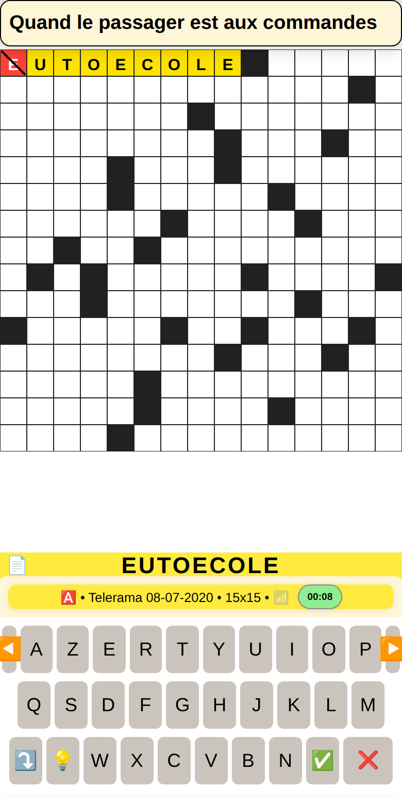
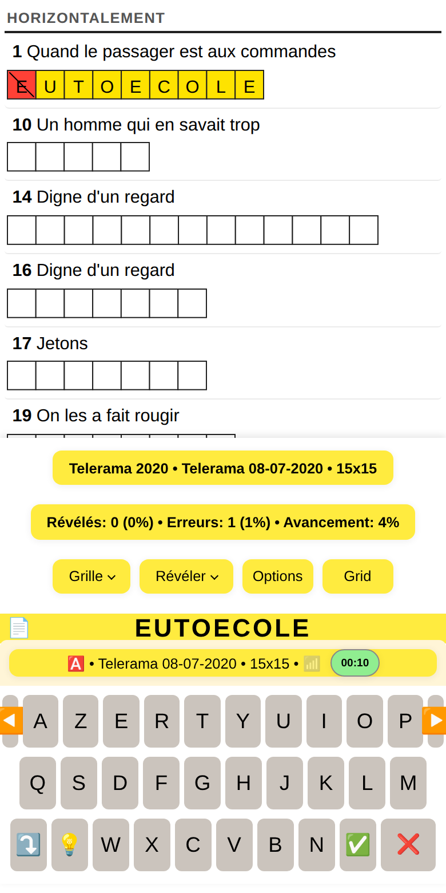
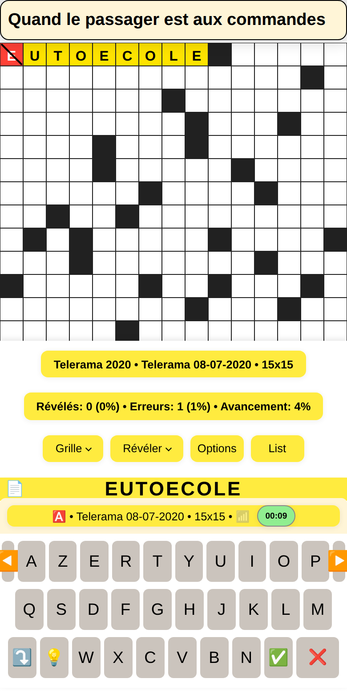
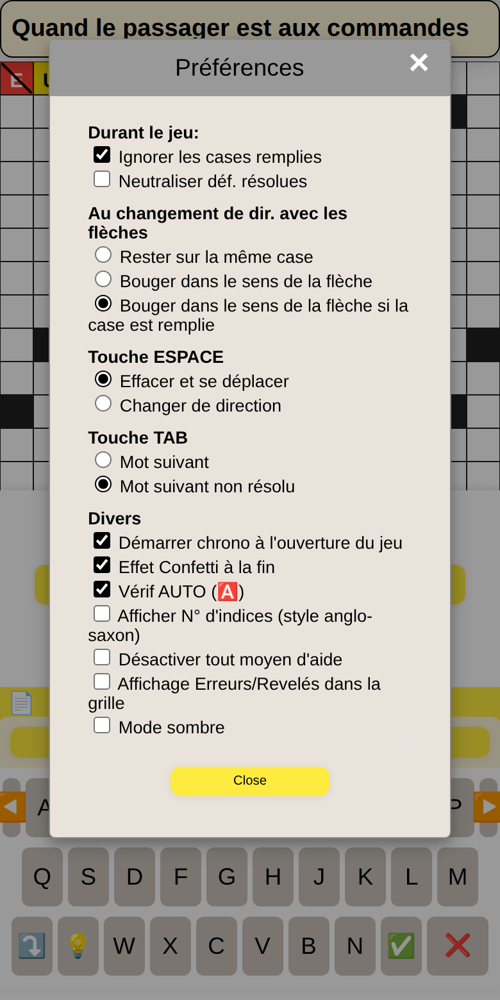

📱 Jouer sur mobile ou tablette
Sur un écran tactile, NexPlay affiche sa propre disposition : la grille en haut, un clavier virtuel intégré en bas, et un tiroir de boutons que l'on fait glisser. Le clavier du téléphone n'est pas utilisé.
1. L'écran de jeu

- Bandeau du haut : la définition du mot en cours.
- Grille : touchez une case pour la sélectionner. Le mot en cours est en jaune, la case active en rouge. Une lettre fausse repérée par la vérification automatique est barrée (comme le « E » en haut à gauche sur la capture).
- Barre jaune «
AUTOECOLE» : les lettres déjà écrites du mot en cours, et des_pour les cases vides. À gauche, le petit symbole 📄 bascule entre mode grille et mode liste. - Barre d'infos (la poignée du tiroir) : 🅰️ si la vérification auto est active, titre de la grille, et le chrono. Touchez-la ou faites-la glisser vers le haut pour ouvrir le tiroir.
- Clavier virtuel en bas
2. Le clavier virtuel et ses touches spéciales
Le clavier est volontairement différent d'un clavier classique : pas de chiffres, de ponctuation ni d'accents (inutiles en mots croisés), mais des touches de navigation et d'aide en plus.
Lettres
Une touche = une lettre écrite dans la case active, puis le curseur passe à la case suivante du mot (en sautant les cases déjà remplies si l'option Ignorer les cases remplies est cochée).
Touches spéciales
| Touche | Action | Remarques |
|---|---|---|
| ◀ | Va au mot précédent. | Respecte l'option « Touche TAB » (mot précédent non résolu ou simplement mot précédent). En mode liste, elle recule d'une case. |
| ▶ | Va au mot suivant. | Même règle. En mode liste : avance d'une case. |
| ⤵️ | Change de direction (horizontal ⇄ vertical) pour la case active. | Équivalent de la touche Espace (option « changer de direction ») ou du double-clic sur ordinateur. Indispensable aux croisements. |
| 💡 | Appui court : révèle la lettre de la case active. Appui long (maintenir environ une demi-seconde) : révèle le mot entier. | Compte comme « Révélé » dans les statistiques. |
| ✅ | Appui long uniquement : révèle le mot en cours. | Ne compte PAS comme triche : c'est un « accélérateur de frappe ». Un simple appui bref ne fait rien (pour éviter les fausses manœuvres). |
| ❌ | Efface la case active et recule. Appui long (maintenir ~0,6 s) : efface en continu, case après case. | Si la lettre effacée était fausse, le curseur ne recule pas : vous pouvez retaper immédiatement dans la même case. |
3. Touches d'aide : avec ou sans « triche »
| Geste | Résultat | Compté dans « Révélés » |
|---|---|---|
| 💡 appui court | Lettre révélée | OUI |
| 💡 appui long | Mot révélé | OUI (lettres qui n'étaient pas déjà justes) |
| ✅ appui long | Mot révélé | NON |
| Menu Révéler › Lettre / Mot / Grille | Lettre, mot ou grille révélés | OUI |
| Menu Vérifier › Lettre / Mot / Grille | Lettres fausses marquées | — (ajoute aux Erreurs) |
| Vérif. auto (🅰️) | Chaque lettre fausse est signalée à la frappe | — (ajoute aux Erreurs) |
4. Toucher, zoomer, déplacer
- Toucher une case : la sélectionne, ainsi que le mot qui la traverse. Pour changer de direction sur une case de croisement, utilisez la touche ⤵️ du clavier.
- Pincer avec deux doigts sur la grille : zoom avant / arrière (très utile sur les grandes grilles ou pour viser une petite case).
- Glisser un doigt sur la grille zoomée : déplace la grille.
- Le pincement est volontairement bloqué sur le clavier pour ne pas zoomer la page par erreur.
- Glisser la barre d'infos vers le haut : ouvre le tiroir ; vers le bas : le referme.
5. Mode liste / mode grille
Sur appareil mobile, deux façons de voir les définitions :
▦ Mode grille (par défaut)
La grille complète est visible ; vous touchez les cases. Idéal pour avoir une vision d'ensemble et exploiter les croisements. Sur un grand écran (tablette), les définitions apparaissent aussi à côté de la grille.
☰ Mode liste
Idée inspirée du site de jeux "amuselabs.com": La grille laisse place à la liste des définitions (HORIZONTALEMENT, puis VERTICALEMENT). Sous chaque définition, une rangée de petites cases montre les lettres déjà trouvées. Idéal quand la grille est trop petite pour vos doigts, ou pour parcourir les définitions à la suite.

Comment basculer
- Touchez le symbole 📄 à gauche de la barre jaune du mot en cours (il change d'aspect en mode liste) ;
- ou ouvrez le tiroir et touchez le bouton List (devenu Grid en mode liste).
Utiliser le mode liste
- Touchez une définition pour la sélectionner : le clavier écrit dans ce mot.
- ◀ ▶ déplacent le curseur d'une case dans le mot (au lieu de sauter de mot en mot comme en mode grille).
- La liste s'ouvre sur la définition active, et les lettres que vous écrivez s'y affichent aussitôt (y compris celles des croisements).
6. Le tiroir : menus, options, statistiques
Le tiroir est le panneau de boutons caché sous la barre d'infos. Pour l'ouvrir : touchez la barre d'infos (celle qui contient le chrono) ou faites-la glisser vers le haut.

📊 Les statistiques
La ligne affichée dans le tiroir donne en un coup d'œil :
Révélés: 3 (1%) • Erreurs: 5 (2%) • Avancement: 42%
- Révélés : nombre de cases où la solution vous a été donnée (voir le tableau du §3) et leur part de la grille.
- Erreurs : nombre de cases où une lettre fausse a été détectée par Vérifier ou par la Vérif. auto.
- Avancement : pourcentage de la grille rempli avec les bonnes lettres.
Les statistiques se mettent à jour à l'ouverture du tiroir (sur mobile, elles ne sont pas recalculées en permanence pour économiser la batterie). Refermez puis rouvrez le tiroir pour les rafraîchir.
Les boutons
| Bouton | Rôle |
|---|---|
| Grille ⌄ | Infos, Notes, Open…, Imprimer (PDF), Sauvegarder (iPUZ), Redémarrer. |
| Vérifier ⌄ | Vérifie la lettre, le mot ou la grille (ne donne pas la réponse). Masqué quand la Vérif. auto est active. |
| Révéler ⌄ | Révèle la lettre, le mot ou la grille (compte comme triche). |
| Options | Ouvre la fenêtre des préférences (voir ci-dessous). |
| List / Grid | Bascule entre mode liste et mode grille. |
7. Les options sur mobile
Touchez Options dans le tiroir. Les réglages sont enregistrés immédiatement et conservés d'une grille à l'autre.

| Option | Effet sur mobile |
|---|---|
| Ignorer les cases remplies | Après une lettre, le curseur saute les cases déjà remplies du mot. |
| Neutraliser déf. résolues | Grise les définitions déjà complètes (particulièrement pratique en mode liste ou sur tablette). |
| Touche TAB : mot suivant / mot suivant non résolu | Gouverne le comportement de ◀ et ▶ du clavier virtuel (aller au mot précédent / suivant, ou au prochain mot non résolu). |
| Au changement de direction avec les flèches et Touche ESPACE | Ne concernent que le clavier physique (tablette avec clavier). Sans clavier physique, ces deux réglages sont sans effet. |
| Démarrer chrono à l'ouverture | Lance le chrono dès l'affichage de la grille. Le chrono se met en pause quand l'application est en arrière-plan. |
| Effet Confetti à la fin | Animation à la fin de la grille. |
| Vérif AUTO (🅰️) | Signale chaque lettre fausse dès la saisie ; le curseur reste sur la case fausse. |
| Afficher N° d'indices | Affiche le numéro de définition dans les cases de départ. |
| Désactiver tout moyen d'aide | Désactive 💡 et ✅ (touches grisées), masque Vérifier et Révéler, coupe la Vérif. auto. |
| Affichage Erreurs/Révélés dans la grille | Marque les cases fausses / révélées dans la grille (avec la Vérif. auto active). |
| Mode sombre | Thème sombre, plus reposant le soir sur un écran OLED. |
| Autosave Crossword (↕️) | Visible seulement si un serveur de sauvegarde est configuré. La sauvegarde locale sur le téléphone reste toujours active. |
8. Tablette et clavier physique
- Sur tablette (écran large), les définitions s'affichent en colonne à côté de la grille ; le clavier virtuel et le tiroir restent disponibles.
- Si vous branchez un clavier physique, tous les raccourcis de l'aide ordinateur fonctionnent également (flèches, Tab, Inser, etc.).
- En orientation paysage, la grille peut être petite : pincez pour zoomer, ou passez en mode liste.